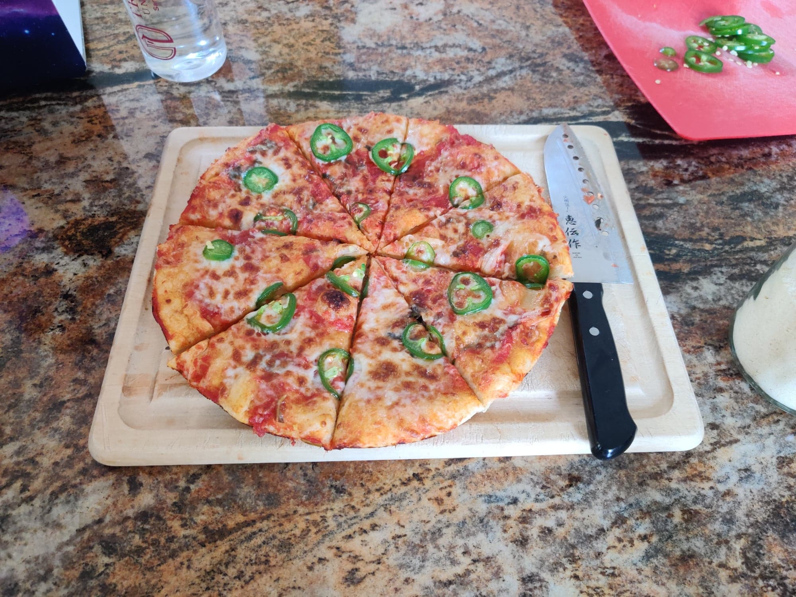
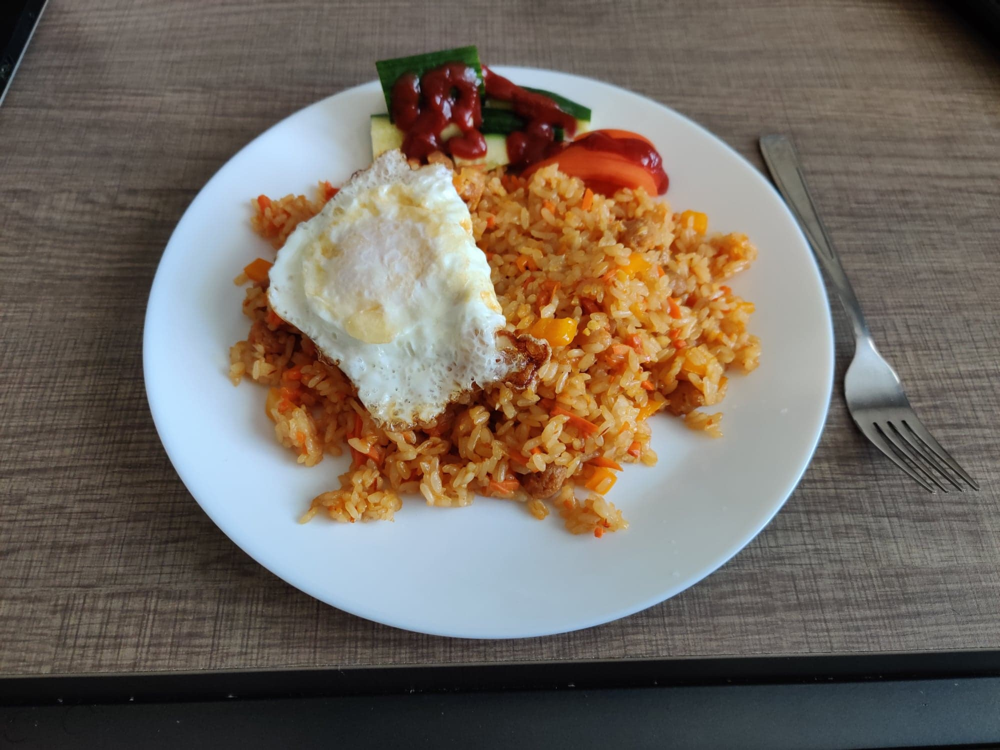

Interests
When I'm not working, I enjoy gaming on my custom-built gaming PC that I built because the COVID-19 pandemic gave me an excuse to 🤪
I enjoy simulation games like Microsoft Flight Simulator, BeamNG.Drive and Assetto Corsa a lot, but I have also been known to fire up some CS:GO and GTA V every once in a while. I also own a Nintendo Switch, so I can often be found playing games like Animal Crossing: New Horizons or MarioKart 8.
I am also an aspiring chef. I spend a great deal of my time trying out new recipes and cuisines from all over the world, and sometimes even coming up with my own ideas.



Of course, I don't just like to cook, I also like to eat! In fact, whenever I travel to a new place, I make it a point to try out the local specialties. Here's some foods I've tried on my travels:
Though food plays a big part in who I am, there's still more. For example, I cannot spend a single moment of my day not listening to music. I am a big fan of K-pop and have attended concerts by numerous artists. Here's a picture of myself at ITZY's Houston concert in January 2020 (I'm the tall guy in the blue hoodie at the front):
I also enjoy listening to all kinds of genres of music from all over the world, from classical music to Mongolian metal. I have also dabbled in making my own music, as I can play the piano and also know a few basics about singing and playing the guitar.
Other interests of mine include linguistics (I can speak English, some Spanish, Tamil, and Korean, and have dabbled in a few other languages), keeping up with tech (I really like to watch LinusTechTips on YouTube) and traveling, something of which I hope to do more of once COVID is over.
I could go on about myself forever, but, well, I have to end it somewhere 😕
Thanks for stopping by! 😁